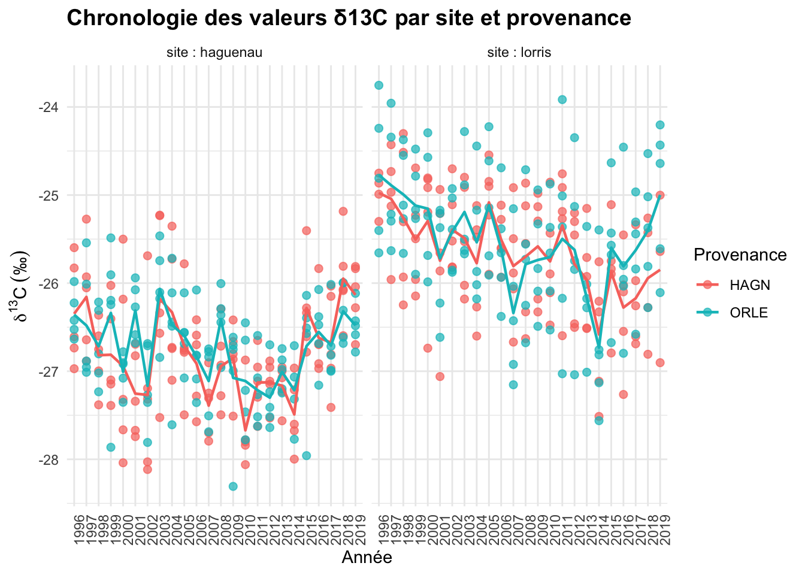
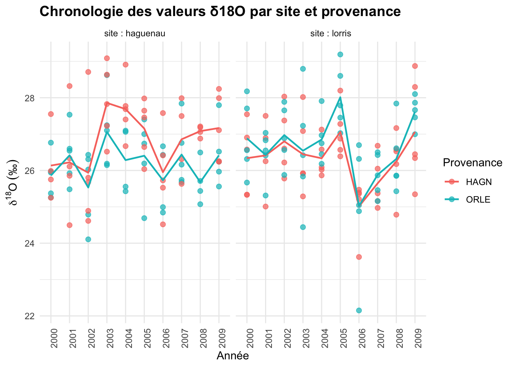

Code
library(readxl)
library(ggplot2)
library(dplyr)Visualisation des résultats d’analyses isotopiques
library(readxl)
library(ggplot2)
library(dplyr)GFF_isotopie_C <- read_excel("~/Desktop/GFF_isotopie_C.xlsx",
col_types = c("text", "text", "text",
"numeric", "numeric", "text", "text",
"numeric", "numeric"))Warning: Expecting numeric in H126 / R126C8: got 'N.A'Warning: Expecting numeric in I126 / R126C9: got 'N.A'# Transformation en data frame
GFF_isotopie_C <- as.data.frame(GFF_isotopie_C)
# Conversion en facteurs
GFF_isotopie_C$site <- as.factor(GFF_isotopie_C$site)
GFF_isotopie_C$Prov <- as.factor(GFF_isotopie_C$Prov)
GFF_isotopie_C$years <- as.factor(GFF_isotopie_C$years)
str(GFF_isotopie_C)'data.frame': 476 obs. of 9 variables:
$ plate_well_ID : chr "P10_B8" "P10_D10" "P10_G2" "P11_A8" ...
$ comment : chr "13C" "13C" "13C" "13C" ...
$ id-plaque perso: chr "GFF10" "GFF10" "GFF10" "GFF11" ...
$ id_ech : num 168 168 168 168 168 45 45 45 45 45 ...
$ years : Factor w/ 24 levels "1996","1997",..: 10 11 12 13 1 24 23 22 21 20 ...
$ Prov : Factor w/ 2 levels "HAGN","ORLE": 1 1 1 1 1 1 1 1 1 1 ...
$ site : Factor w/ 2 levels "haguenau","lorris": 1 1 1 1 1 2 2 2 2 2 ...
$ C% : num 55.2 37.5 31.3 38.5 39.1 ...
$ d13C : num -25.8 -26.4 -26.9 -26.3 -25.6 ...ggplot(GFF_isotopie_C, aes(x = years, y = d13C, color = Prov)) +
geom_point(alpha = 0.7, size = 2) +
stat_summary(fun = mean, geom = "line", aes(group = Prov), linetype = "solid", size = 0.8) +
facet_wrap(~site, labeller = labeller(site = function(x) paste("site :", x))) +
theme_minimal() +
labs(
title = "Chronologie des valeurs δ13C par site et provenance",
x = "Année",
y = expression(delta^{13}*C~("\u2030")),
color = "Provenance"
) +
theme(
axis.text.x = element_text(angle = 90, hjust = 1),
plot.title = element_text(face = "bold", size = 14)
)Warning: Using `size` aesthetic for lines was deprecated in ggplot2 3.4.0.
ℹ Please use `linewidth` instead.Warning: Removed 1 row containing non-finite outside the scale range
(`stat_summary()`).Warning: Removed 1 row containing missing values or values outside the scale range
(`geom_point()`).
GFF_isotopie_O <- read_excel("~/Desktop/GFF_isotopie_O.xlsx",
col_types = c("text", "numeric", "text",
"text", "numeric", "numeric", "text",
"text", "numeric", "numeric"))Warning: Expecting numeric in J10 / R10C10: got 'N.A'Warning: Expecting numeric in J180 / R180C10: got 'N.A'Warning: Expecting numeric in J181 / R181C10: got 'N.A'Warning: Expecting numeric in J188 / R188C10: got 'N.A'GFF_isotopie_O <- as.data.frame(GFF_isotopie_O)
GFF_isotopie_O <- GFF_isotopie_O %>%
mutate(
site = factor(site),
Prov = factor(Prov),
years = factor(years)
)
str(GFF_isotopie_O)'data.frame': 197 obs. of 10 variables:
$ plate_well_ID : chr "P51_A4" "P51_A5" "P51_A6" "P51_A7" ...
$ Masse_(mg) : num 0.382 0.446 0.432 0.391 0.46 0.389 0.391 0.399 0.448 0.446 ...
$ comment : chr "O18" "O18" "O18" "O18" ...
$ id-plaque perso: chr "GFF51'" "GFF51'" "GFF51'" "GFF51'" ...
$ id_ech : num 45 45 45 45 45 45 45 45 45 45 ...
$ years : Factor w/ 10 levels "2000","2001",..: 10 9 8 7 6 5 4 3 2 1 ...
$ Prov : Factor w/ 2 levels "HAGN","ORLE": 1 1 1 1 1 1 1 1 1 1 ...
$ site : Factor w/ 2 levels "haguenau","lorris": 2 2 2 2 2 2 2 2 2 2 ...
$ signal_nA : num 16 13.2 16.4 11.4 13.8 ...
$ d18O - IRMS (‰): num 28.3 26.2 25.2 25.2 26.6 ...### Visualisation ###
ggplot(GFF_isotopie_O, aes(x = years, y = `d18O - IRMS (‰)`, color = Prov)) +
geom_point(alpha = 0.7, size = 2) +
stat_summary(fun = mean, geom = "line", aes(group = Prov), linetype = "solid", size = 0.8) +
facet_wrap(~site, labeller = labeller(site = function(x) paste("site :", x))) +
theme_minimal() +
labs(
title = "Chronologie des valeurs δ18O par site et provenance",
x = "Année",
y = expression(delta^{18}*O~("\u2030")),
color = "Provenance"
) +
theme(
axis.text.x = element_text(angle = 90, hjust = 1),
plot.title = element_text(face = "bold", size = 14)
)Warning: Removed 4 rows containing non-finite outside the scale range
(`stat_summary()`).Warning: Removed 4 rows containing missing values or values outside the scale range
(`geom_point()`).